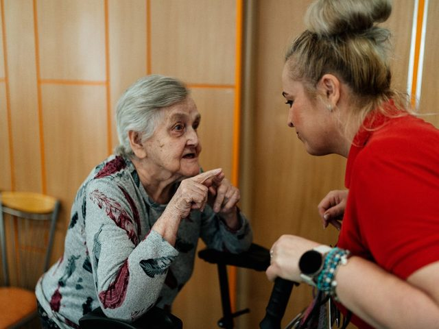
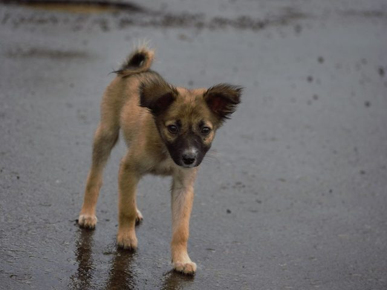

LALA WORD · UNIT 7
一字多義（七）
Too Good to Be True
16 個單字一字多義
本單元單字一覽
fall 是秋天，也是「掉下來」；spring 是春天，也是「彈簧」和「泉水」。這個單元有 4 個主題單字、12 個更多單字，再整理 hear／here、lend／borrow，和都是「說」的 talk／say／speak／tell。
tellstartcalllessonclubfallheavykindmeanmineorderownpoorseasonsnowspring
每個字先聽 🔊，再一個意思一個意思看例句。
1. tell 主題單字．3 個意思

tell
tell - told - told - telling
v.告訴；說tell a story / joke / lie 說故事／笑話／說謊；tell on 告狀
Please tell me about your trip.
請告訴我你這趟旅行的事。
v.顯示
Her smile told me she was happy.
她的微笑告訴我她很開心。
v.分辨tell A from B 分辨 A 和 B
I can't tell the twins apart.
我分不出這對雙胞胎。
2. start 主題單字．3 個意思
start
start - started - started - starting
v.開始start to V / V-ing 開始做；start over 重新開始
School starts at eight.
八點開始上課。
n.開始；開端make a fresh start 重新開始
We had a good start this year.
我們今年有個好的開始。
v.創立start a business 創業
Her parents started a small restaurant.
她爸媽開了一家小餐廳。
3. call 主題單字．4 個意思

call
call - called - called - calling
n.通話；電話make a call 打電話；return a call 回電
I got a call from my uncle.
我接到叔叔打來的電話。
v.打電話call back 回電
Call me when you get home.
到家的時候打電話給我。
v.叫；喊call for help 呼救；call off 取消
Mom is calling us for dinner.
媽媽在叫我們吃晚飯。
v.稱呼；取名
We call our cat Mimi.
我們叫我們的貓咪咪。
4. lesson 主題單字．2 個意思
lesson
複數 lessons
n.教訓；經驗learn a lesson 學到教訓
I learned my lesson. I will never be late again.
我學到教訓了，再也不會遲到。
n.課take lessons 上課
She takes piano lessons every Friday.
她每個星期五上鋼琴課。
5. club 更多單字．3 個意思
club
複數 clubs
n.社團；俱樂部
I joined the chess club at school.
我參加了學校的西洋棋社。
n.夜店
They went dancing at a club.
他們去夜店跳舞。
n.棍棒；球桿
He hit the golf ball with a club.
他用球桿打高爾夫球。
6. fall 更多單字．5 個意思
fall
fall - fell - fallen - falling
n.秋天
The leaves turn red in fall.
秋天葉子變紅。
n.瀑布（falls）
We saw the beautiful falls in the mountains.
我們在山裡看到美麗的瀑布。
v.掉下；跌倒fall down 跌倒
Be careful! Don't fall down.
小心！別跌倒。
v.下降
The temperature fell to 10°C last night.
昨晚氣溫降到十度。
v.變成（某種狀態）fall asleep 睡著；fall in love 墜入愛河
The baby fell asleep in my arms.
寶寶在我懷裡睡著了。
7. heavy 更多單字．3 個意思
heavy
heavy - heavier - heaviest
adj.重的
This box is too heavy for me.
這個箱子對我來說太重了。
adj.繁重的；大量的heavy rain 大雨；heavy traffic 交通擁擠
There is heavy traffic in the morning.
早上交通很擁擠。
adj.厚實的
Wear a heavy coat. It's very cold.
穿件厚外套，天氣很冷。
8. kind 更多單字．2 個意思

kind
kind - kinder - kindest；複數 kinds
adj.親切的；好心的be kind to 對…好
It's very kind of you to help me.
你幫我真是太好心了。
n.種類all kinds of 各式各樣的
What kind of music do you like?
你喜歡哪一種音樂？
9. mean 更多單字．5 個意思
😠
mean
mean - meant - meant - meaning；mean - meaner - meanest
v.意思是
What does this word mean?
這個字是什麼意思？
v.故意；打算
Sorry, I didn't mean to hurt you.
對不起，我不是故意要傷害你。
v.有意義；很重要
Your letter means a lot to me.
你的信對我意義重大。
adj.刻薄的；兇的be mean to 對…很兇
Don't be mean to your little sister.
不要對妹妹那麼兇。
adj.小氣的
He is mean with his money.
他對錢很小氣。
10. mine 更多單字．3 個意思

mine
pron.我的（東西）
This pen is not mine.
這支筆不是我的。
n.礦坑
The workers dig for gold in the mine.
工人在礦坑裡挖金子。
n.地雷
Mines are very dangerous.
地雷非常危險。
11. order 更多單字．4 個意思
order
order - ordered - ordered - ordering
v.點餐；訂購
Are you ready to order?
您準備好點餐了嗎？
n.訂單；點的餐take one's order 幫…點餐；place an order 下訂單
The waiter took our order.
服務生幫我們點餐。
v.命令order + 人 + to V 命令某人做
The coach ordered us to run five laps.
教練命令我們跑五圈。
n.順序in order to 為了
Put the words in the right order.
把這些字排成正確的順序。
12. own 更多單字．2 個意思

own
own - owned - owned - owning
adj.自己的on one's own 獨自
I have my own room now.
我現在有自己的房間了。
v.擁有
My uncle owns a big farm.
我叔叔擁有一座大農場。
13. poor 更多單字．4 個意思

poor
poor - poorer - poorest
adj.貧窮的
The family was too poor to buy a car.
那家人窮得買不起車。
adj.可憐的
The poor dog was left in the rain.
那隻可憐的狗被丟在雨中。
adj.不擅長的be poor at 不擅長
I'm poor at math.
我數學不好。
adj.不好的；差的poor health 健康不佳
He is in poor health.
他身體不好。
14. season 更多單字．3 個意思

season
season - seasoned - seasoned - seasoning
n.季節
Which season do you like best?
你最喜歡哪個季節？
n.季；時期in season 當季；rainy season 雨季
Mangoes are in season now.
現在是芒果的產季。
v.調味
Season the soup with a little salt.
在湯裡加一點鹽調味。
15. snow 更多單字．2 個意思
snow
snow - snowed - snowed - snowing
n.雪
The kids made a snowman in the snow.
孩子們在雪地裡堆雪人。
v.下雪
It snowed on Hehuan Mountain last night.
昨晚合歡山下雪了。
16. spring 更多單字．4 個意思

spring
spring - sprang - sprung - springing
n.春天
Flowers bloom in spring.
花在春天盛開。
n.彈簧
This old bed has a broken spring.
這張舊床有一根彈簧壞了。
n.泉水hot spring 溫泉
We went to Beitou to enjoy the hot springs.
我們去北投泡溫泉。
v.跳起；突然出現spring up 快速出現
The cat sprang onto the table.
貓一躍跳上桌子。
易混淆字：hear 和 here（發音一樣）
| 單字 | 意思 | 例句 |
|---|---|---|
| hear | （動詞）聽到 | Can you hear me? |
| here | （副詞）這裡；Here you are. 給你 | Come here, please. |
聽力題兩個字發音一樣，要看上下文判斷。
易混淆字：lend 和 borrow
| 單字 | 用法 | 例句 |
|---|---|---|
| lend | 借出（主詞是借給別人的人）：lend + 物 + to + 人 | Can you lend me your eraser? |
| borrow | 借入（主詞是向別人借的人）：borrow + 物 + from + 人 | Can I borrow your eraser? |
lend - lent - lent；borrow - borrowed - borrowed。
易混淆字：talk／say／speak／tell
| 單字 | 用法 | 例句 |
|---|---|---|
| talk | 聊天、討論：talk to / with + 人、talk about + 事 | We talked about the movie. |
| say | 說的「內容」；告示、時鐘也可以 say | The sign says "No Smoking." |
| speak | 說某種語言；比較正式的說話 | Can you speak Japanese? |
| tell | 告訴某人：tell + 人 + 事；tell a story / a lie | Tell me the truth. |
一字多義：最常見 vs. 容易忽略的意思
| 單字 | 最常見的意思 | 容易忽略的意思 |
|---|---|---|
| fall | 秋天 | 掉下；falls 瀑布 |
| spring | 春天 | 彈簧；泉水 |
| mean | 意思是 | 刻薄的；小氣的 |
| mine | 我的 | 礦坑；地雷 |
| club | 社團 | 球桿 |
| kind | 親切的 | 種類 |
| season | 季節 | 調味 |
快問快答：這句的 粗體字 是什麼意思？
1I can't tell the twins apart.分辨
2Her parents started a small restaurant.創立
3We call our cat Mimi.稱呼；取名
4She takes piano lessons every Friday.課
5He hit the golf ball with a club.棍棒；球桿
6The baby fell asleep in my arms.變成（某種狀態）
7Wear a heavy coat. It's very cold.厚實的
8What kind of music do you like?種類
快問快答：這句的 粗體字 是什麼意思？
1He is mean with his money.小氣的
2Mines are very dangerous.地雷
3Put the words in the right order.順序
4My uncle owns a big farm.擁有
5He is in poor health.不好的；差的
6Season the soup with a little salt.調味
7It snowed on Hehuan Mountain last night.下雪
8The cat sprang onto the table.跳起；突然出現
學完了！接下來
複習方法
review
- 回到「📗 單字卡」，按「遮中文」，看例句說出每個意思
- 特別記「容易忽略的意思」（例如 pen 圍欄、ball 舞會）
- 每個例句跟著 🔊 唸一次
準備好了
- 按右上角「📝 前往測驗」
- 測驗錯的題目要訂正到全對
- 訂正完成補送 1 點